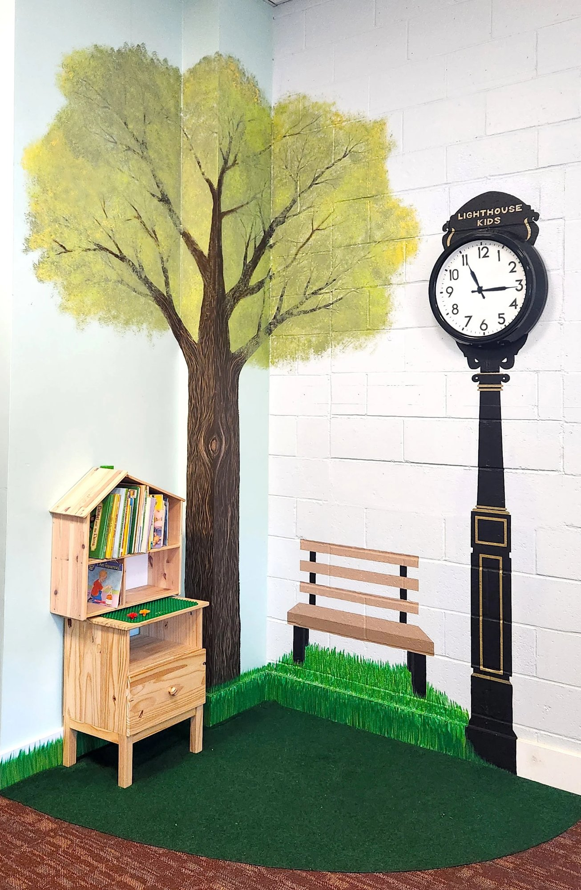

兒童事工
Children's
栽培下一代的信仰根基
Building faith foundations in young hearts
兒童事工
Children's
「耶穌又對眾人說：『我是世界的光。跟從我的，就不在黑暗裡走，必要得著生命的光。』」
"Jesus then said to the crowd, 'I am the light of the world. Whoever follows me will never walk in darkness, but will have the light of life.'"
— 約翰福音 John 8:12
歡迎來到燈塔兒童事工
Welcome to Lighthouse Children's Ministry
燈塔兒童計劃旨在為孩子們創造一個充滿樂趣且安全的空間，讓他們認識基督及祂的品格。我們服務從出生到六年級的兒童。兒童崇拜每週日上午十一時十五分在教會舉行。歡迎您在週日前來，一起學習聖經和耶穌基督的教導！
The Lighthouse Kids program aims to create a fun and safe space for children to learn about Christ and His character. We serve children from birth to sixth grade. Our children's worship service is held every Sunday morning at 11:15 AM at the church. You are welcome to join us on Sundays to learn about the Bible and the teachings of Jesus Christ!
我們的心願是讓孩子們透過以基督為中心的動態課程來經歷神，使他們在神的時間裡，選擇藉著耶穌基督與神建立個人的關係。
Our desire is for children to experience God through a Christ-centered, dynamic program so that, in God's time, they will choose to build a personal relationship with Him through Jesus Christ.
感謝您的委身與反思，思考如何運用您的時間、才能和恩賜來服事教會的兒童事工。當您以神的真理裝備孩子們時，您擁有這獨特的機會，親眼見證他們對神的愛不斷成長。
Thank you for your dedication and reflection on how to use your time, talents, and gifts to serve the children's ministry in the church. When you equip children with God's truth, you alone have this unique opportunity to witness their ever-growing love for God.
請聯繫我們，了解更多有關我們事工的資訊以及您可以如何參與。我們的燈塔兒童團隊將盡快與您聯絡！
Please contact us to learn more about our ministry and how you can participate. Our Lighthouse Kids team will get in touch with you as soon as possible!

有興趣參與或了解更多？
Interested in getting involved or learning more?
✉️ 聯絡我們 Contact Us ← 返回事工 Back to MinistriesJoin Us Online
無法親自出席？線上觀看直播或隨時收看錄影。
Can't make it in person? Watch our services live or access recordings anytime.